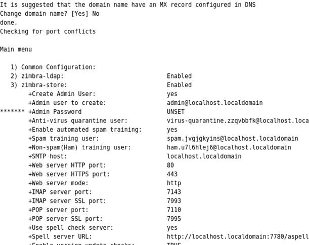
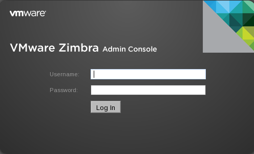
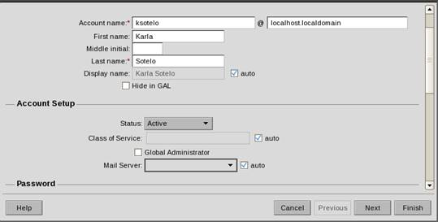

INSTALACION DE ZIMBRA
Zimbra es suite de colaboración Zimbra (en inglés: ‘Zimbra Collaboration Suite’ o ZCS) es un programa informático colaborativo o Groupware creado por Zimbra Inc.
Antes de instalar
Para empezar, se instalan en el sistema GNU/Linux CentOS 5 los siguientes paquetes;
yum install gcc
yum install libtool-ltdl
yum install compat-db
yum install sysstat
yum install gmp-devel.x86_64
Se desactiva el servicio de sendmail;
chkconfig sendmail off
Se detiene el servicio de sendmail;
service sendmail stop
Se procede con la descomprensión del paquete zimbra;
tar -zxvf zcs-7.1.4_GA_2555.RHEL5_64.20120105094627.tgz
Si se desea se renombra el direcotorio recien descompreso;
mv zcs-7.1.4_GA_2555.RHEL5_64.20120105094627 zcs-7.1.4
Se ingresa al directorio;
cd zcs-7.1.4
Se procede con la instalación;
Donde;
– – platform-override: Permite que no verifique versión.
Se acpetan los términos de licencia y se seleccionan (Y) todos los paquetes. Se realiza una comprobación del sistema operativo, contestando (Y);
Si se está instalando como prueba (mi caso) y no se cuenta con un servicio DNS, se escribe No cuando se pregunta sobre el servicio de Dominio;

Se asgina la contraseña del Admin del sistema (opción 3) y se escribe la letra “a” para completar la instalación;
Se cambia al usuario zimbra y se ejecuta la sintaxis zmcontrol status para verificar que los servicios se instalaron correctamente;
Se edita el archivo syslog con el objetivo de controlar las entradas remotas, agregando el parámetro -ren la opción SYSLOGD_OPTIONS;
vim /etc/sysconfig/syslog
Listo, ya se cuenta con la suite colaborativa de zimbra. Para ingresar se abre el navegador y se escribe;
https://localhost.localdomain:7071/zimbraAdmin

Hechando un vistazo al panel de administración y creando una cuenta de correo;

Si se desea comprobar la cuenta recien creada, se escribe en el navegador Web;
http://localhost.localdomain/zimbra
{kind=link}
{kind=link}
{kind=link}
{kind=link}
{kind=link}
{kind=link}
{kind=link}
{kind=link}
{kind=link}